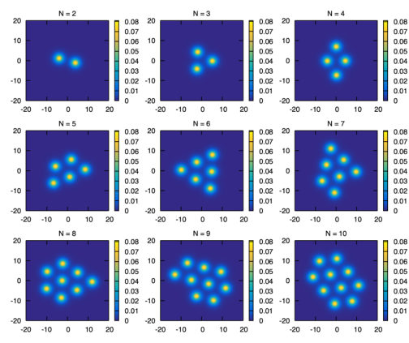
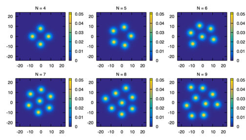
Authors: A. Alonso-Izquierdo, A. González-Parra, K. Slawinska, A. Wereszczynski, T. Winyard
Type: theory · Category: other · PDF: https://arxiv.org/pdf/2610.17437v1
Analysis basis: full PDF text, analyzed in chunks
Topic relevance: analog quantum simulation 2/5 · Keldysh / 2PI / non-Gaussian methods 1/5


Summary. This theoretical paper explores how adding a dimension-six self-interaction term modifies the behavior of vortices in the Abelian-Higgs model. It predicts the existence of two novel mixed-type vortices (I-II and II-I) characterized by different combinations of short-range attraction/repulsion and long-range attraction/repulsion. This work provides a detailed phase diagram for these exotic topological structures.
Why it may be interesting. While focused on condensed matter/high-energy theory, the mathematical framework of classifying stable/unstable topological defects based on interaction potentials and spectral analysis is highly relevant to understanding defect dynamics in quantum field theories relevant to AMO physics.
Main problem. The study investigates the nature and structure of multi-vortex solutions that arise when a dimension-six self-interaction term is added to the standard Abelian-Higgs or Ginzburg-Landau model.
Main result. The inclusion of this interaction introduces novel mixed-type vortices, specifically Type I-II (short-range attraction, long-range repulsion) and Type II-I (short-range repulsion, long-range attraction).
Method. The analysis combines asymptotic methods for long-range forces with spectral problem analysis to determine the short-range interaction regimes.
Model / system. The system is modeled by a modified Abelian-Higgs/Ginzburg-Landau Lagrangian, incorporating a potential term $V$ that includes a dimension-six self-interaction parameter $b$.
Key observables. Long-range interaction energy $E_{int}(d)$, short-range force character (attraction/repulsion), and the binding energy ratio $E_N / E_1$ for multi-vortex configurations.
Important parameters / regimes. The coupling constants $\lambda$ and $b$, which define the phase space separating Type I, Type II, Type I-II, and Type II-I regimes.
Assumptions / limitations. The long-range analysis assumes the distance $d$ is much larger than the characteristic scales $l_B$ and $l_\phi$. The short-range analysis relies on solving a complex spectral problem.
Figures summary. Figure 1 maps the parameter space $(\lambda, b)$ to show the distinct vortex phases. Other figures illustrate the physical realization of Type II-I solutions (lattice chunks vs. clusters) and the binding energy dependence for Type I-II solutions.
Paper structure. The paper first establishes the modified model and analyzes the long-range force behavior, identifying the separation curve $\mu^2 = u^2$. It then tackles the short-range force via spectral analysis, leading to the classification of the four vortex types (I, II, I-II, II-I) based on parameter space mapping.
We show that adding a dimension-six self-interaction to the Abelian-Higgs or Ginzburg Landau model results in a remarkable and rich structure of multi-vortex solutions. Besides the standard type I (attractive) and type II (repulsive) regimes, separated by the Bogomol'nyi-Prasad-Sommerfeld limit (BPS), we identify two new possibilities: type I-II vortices, which attract at short distances and repel at long distances; and type II-I vortices, with the opposite behaviour. Specifically, within the type II-I regime, multi-vortex solutions form chunks of the Abrikosov lattice or clusters. Conversely, in the I-II regime, axially symmetric multi-vortices are stable; nevertheless, depending on the model parameters and topological charge (winding number), they can be either the ground state or not.
Authors: Dongming Zhao, Shamarita Deb, Lichen Ji, Souvik Das, Paul Simon, Raúl Cardoso-Gil, Steffen Wirth, Walter Schnelle, Sushmita Chandra, Jian-Feng Ge, Claudia Felser
Type: experiment · Category: other · PDF: https://arxiv.org/pdf/2610.17879v1
Analysis basis: full PDF text, analyzed in chunks
Topic relevance: quantum measurements 2/5
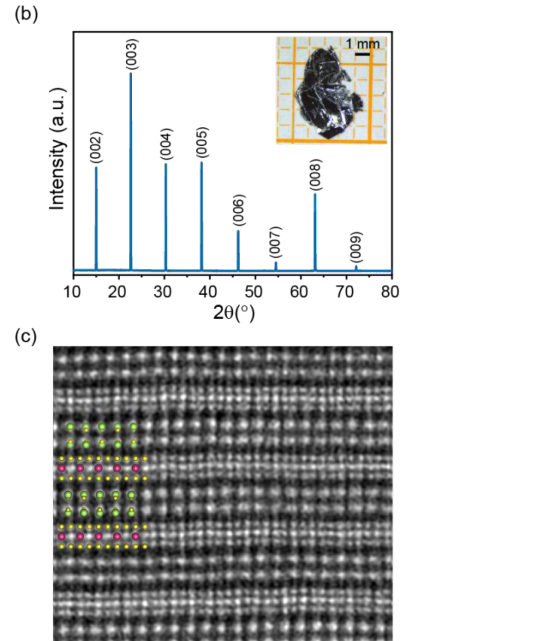
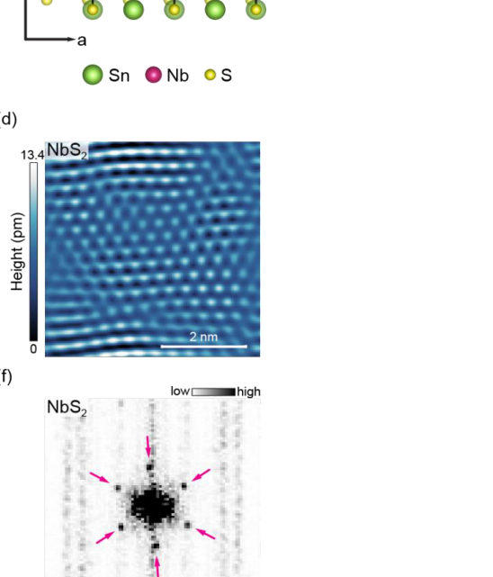

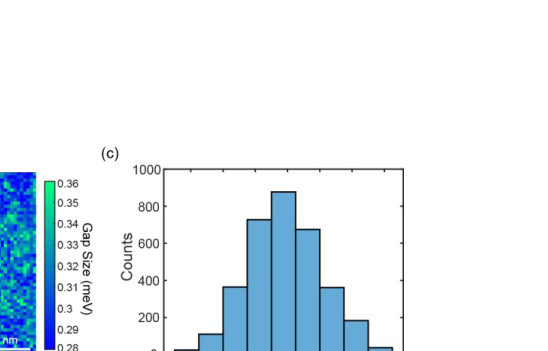
Summary. This work characterizes the atomic-scale structure and superconductivity of the misfit layered compound (SnS)1.17NbS2. Using STM and STS, the authors found that while the surface structure differs from the bulk, the superconducting gap remains remarkably uniform across both SnS and NbS2 terminations. This establishes an atomic-scale picture of the superconducting state in this naturally assembled heterostructure.
Why it may be interesting. While focused on superconductivity, the use of STM to resolve atomic-scale structural differences and map local electronic order parameters provides a model for studying how structural mismatch or surface reconstruction can influence emergent quantum states in heterostructures.
Main problem. The study investigates the atomic-scale surface structure and local superconducting gap of the misfit layered compound (SnS)1.17NbS2, specifically addressing how surface termination affects electronic properties.
Main result. The superconducting gap was found to be nearly identical on both SnS and NbS2 terminations, suggesting coherence across the layers, despite the surface structure differing from the bulk misfit arrangement.
Method. The research employed a combination of structural characterization (XRD, STEM) and local electronic measurements using low-temperature scanning tunneling microscopy (STM) and spectroscopy (STS).
Model / system. The physical system is the misfit layered compound (SnS)1.17NbS2, which naturally forms an alternating superlattice of SnS and NbS2 sublayers. The investigation focuses on the electronic states at the surface terminations.
Key observables. Superconducting gap ($\Delta$), surface atomic registry, and electrical resistivity ($ ho(T)$).
Important parameters / regimes. Superconducting gap size ($\approx 0.33 ext{ meV}$), temperature ($2 ext{ K}$), and the misfit lattice periodicity.
Assumptions / limitations. The analysis assumes that the surface structure relaxation on the SnS termination is due to the bulk configuration being energetically unfavorable. The gap size comparison relies on fitting spectra using the Dynes formula.
Figures summary. Figures show structural confirmation via XRD/STEM, STM images revealing distinct SnS and NbS2 terminations, and STS spectra confirming a uniform superconducting gap across both surfaces.
Paper structure. The paper proceeds by first confirming the bulk misfit structure using XRD and STEM. It then uses STM to resolve the distinct surface terminations (SnS vs. NbS2). Finally, STS measurements are performed to map the superconducting gap on these surfaces, comparing the results to the bulk structural context.
Superlattices of van der Waals-coupled two-dimensional materials offer a platform for engineering electronic band structure and fostering emergent quantum states. Misfit layered compounds provide naturally assembled superlattices, in which crystallographically distinct two-dimensional subsystems coexist within a single bulk crystal. Therein, the presence of both commensurate and incommensurate lattice directions introduces structural modulation, which might alter real-space electronic orders such as superconductivity. Here, we investigate the atomic-scale surface structure and local superconductivity of the misfit layered compound (SnS)1.17NbS2 using structural characterization, electrical transport, and low-temperature scanning tunnelling microscopy (STM). While X-ray diffraction and cross-sectional scanning transmission electron microscopy confirm the bulk misfit structure, STM resolves large SnS- and NbS2-terminated terraces, where the surface atomic registry differs from the bulk misfit structure. Furthermore, tunnelling spectroscopy at 2 K reveals nearly identical superconducting gaps on both terminations, and the spatial variation of the gap shows no visible modulation that corresponds to the misfit lattice. These results establish an atomic-scale picture of the surface structure and superconducting states of this naturally assembled misfit heterostructure.
Authors: Abanoub Mikhail, Nikolay Solodovchenko, Sen Xu, Fan Zhang, Maksim Tumashov, Mingzhao Song, Sergei Makarov, Andrey Bogdanov
Type: theory · Category: other · PDF: https://arxiv.org/pdf/2610.17862v1
Analysis basis: full PDF text, analyzed in chunks
Topic relevance: analog quantum simulation 1/5 · driven-dissipative phase transition 1/5 · interference shaping light 1/5
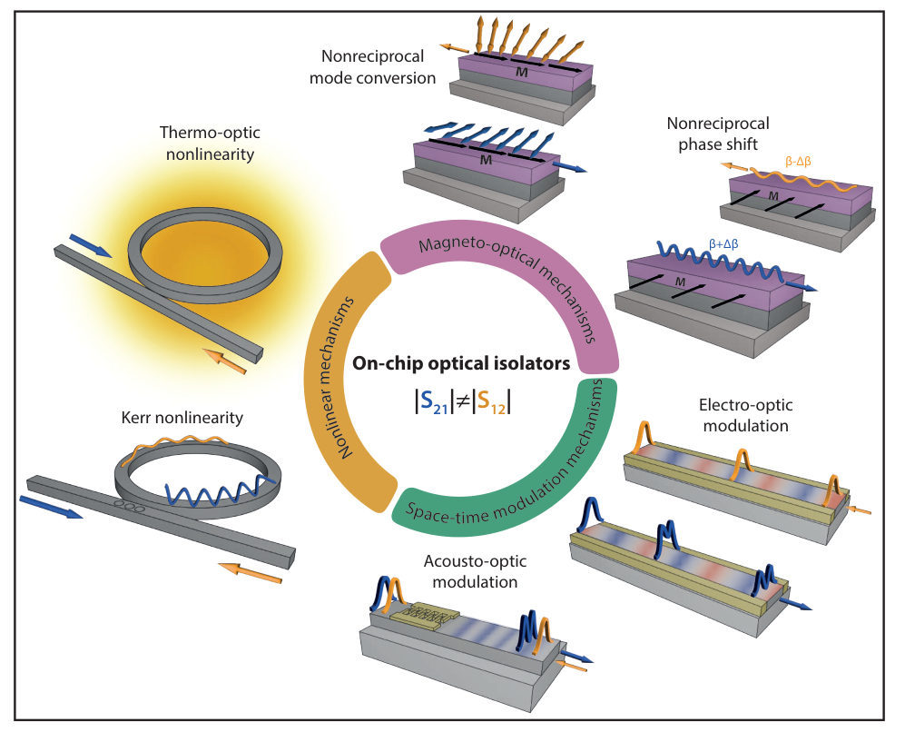
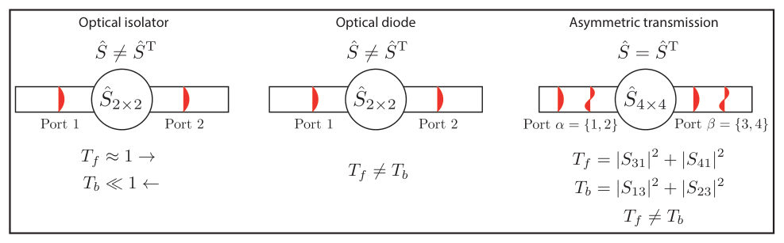
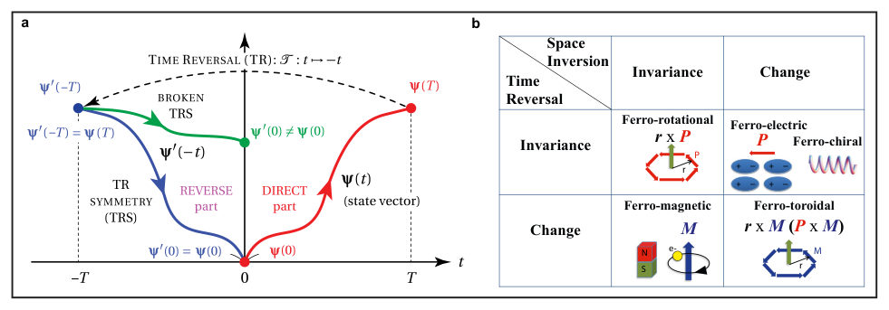

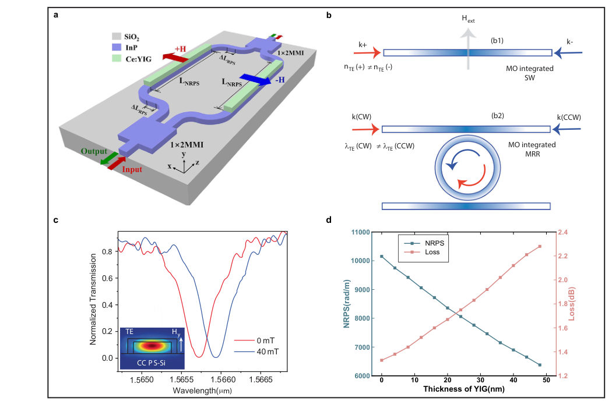
Summary. This review analyzes the fundamental physics and technological challenges of creating on-chip optical isolators. It systematically compares three primary physical mechanisms—magneto-optical effects, external time modulation, and nonlinear optics—required to break Lorentz reciprocity. The work provides a crucial mechanism-based guide for designing scalable, high-performance photonic integrated circuits.
Why it may be interesting. It is highly relevant as it bridges fundamental concepts of symmetry breaking (Lorentz reciprocity) with practical engineering requirements for advanced quantum photonic devices, touching upon non-Hermitian physics and topological concepts.
Main problem. The primary challenge is developing a practical, on-chip optical isolator that combines strong isolation, low insertion loss, broad bandwidth, and scalability.
Main result. The review establishes a mechanism-based framework, comparing three physical routes—magneto-optical bias, space-time modulation, and nonlinear processes—to achieve the necessary nonreciprocal response.
Method. The analysis uses the scattering matrix formalism and compares different physical mechanisms required to break Lorentz reciprocity in linear and nonlinear electromagnetic systems.
Model / system. The focus is on photonic integrated circuits (PICs) containing components like lasers and modulators, analyzed using Maxwell's equations and the scattering matrix ($\mathbf{S}$).
Key observables. Isolation strength, insertion loss, bandwidth, footprint, and the degree of nonreciprocity ($\mathbf{S} eq \mathbf{S}^T$).
Important parameters / regimes. Lorentz reciprocity, magnetization strength, external drive requirements, and material nonlinearities.
Assumptions / limitations. The review distinguishes between true isolation (requiring broken reciprocity) and mere asymmetric transmission, which can arise from reciprocal effects.
Figures summary. Figure 1 provides a mechanism-based map linking physical mechanisms (MO, Space-time modulation, Nonlinear) to nonreciprocal effects. Figure 2 schematically compares the definitions of an optical isolator versus simple asymmetric transmission using S-matrix elements.
Paper structure. The paper progresses by first defining the physical requirements (breaking reciprocity) and then systematically comparing the three major physical routes (MO, Time Modulation, Nonlinear) while discussing cross-cutting theoretical tools like topological and non-Hermitian physics.
Optical isolation suppresses back-reflections that destabilize lasers, produce parasitic interference, and increase crosstalk in photonic systems. Although free-space and fibre-optic isolators are mature, no broadly adopted on-chip technology yet combines strong isolation, low insertion loss, broad bandwidth, compact footprint, and scalable fabrication. The difficulty is twofold: Lorentz reciprocity must be broken, and every relevant backward spatial, spectral, and polarization channel must be suppressed. This Review develops a common framework for assessing proposed solutions. We first distinguish pairwise nonreciprocity from intensity-asymmetric transmission and from true isolation using the constitutive relations and scattering matrix. We then compare three physical routes to an integrated nonreciprocal response: magneto-optical bias, externally driven space-time modulation, and nonlinear optical processes. Topological and non-Hermitian systems are treated as cross-cutting design frameworks that can route, protect, or enhance an underlying nonreciprocal response, but do not by themselves break reciprocity. Finally, we examine fundamental constraints and practical trade-offs among isolation, insertion loss, bandwidth, footprint, modal coverage, drive requirements, and fabrication compatibility. The resulting mechanism-based perspective connects reciprocity-breaking physics to the requirements of scalable photonic integrated circuits.
Authors: Konstantinos Sourounis, Peter M. Oppeneer
Type: theory · Category: other · PDF: https://arxiv.org/pdf/2610.18286v1
Analysis basis: full PDF text, analyzed in chunks
Topic relevance: Keldysh / 2PI / non-Gaussian methods 1/5

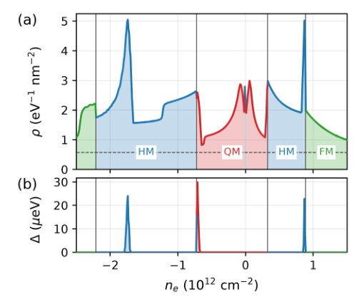
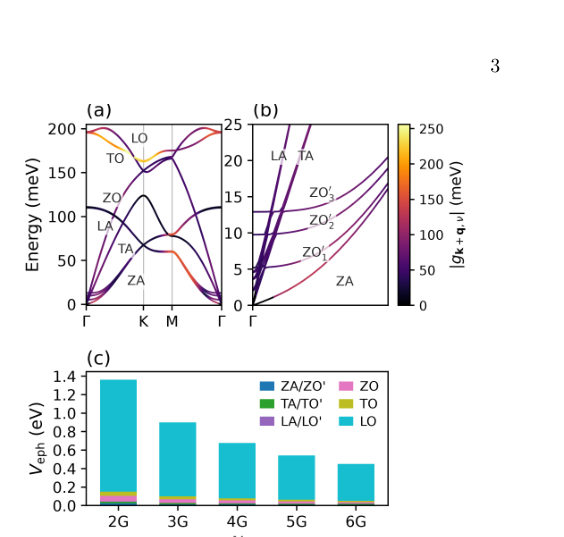
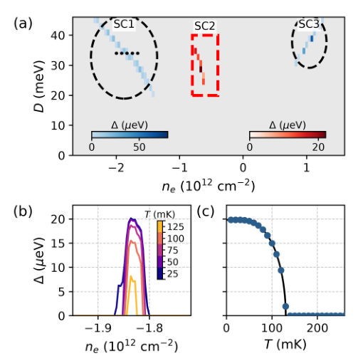
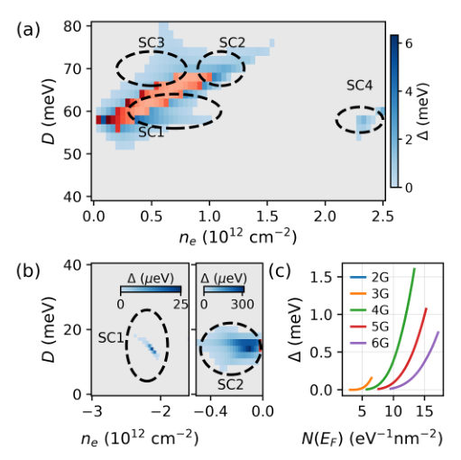
Summary. This work theoretically investigates superconductivity in multilayer graphene, showing that phonon-mediated pairing successfully explains multiple distinct superconducting phases observed experimentally. By solving the Migdal-Eliashberg equations using first-principles inputs, the authors map out the superconducting phase diagram as a function of doping and layer number.
Why it may be interesting. The detailed theoretical framework connecting lattice vibrations (phonons) to superconductivity in a 2D material like graphene is highly relevant to understanding unconventional pairing mechanisms in low-dimensional quantum systems.
Main problem. The study investigates the microscopic origin of superconductivity in rhombohedral multilayer graphene, specifically determining the role of phonon-mediated pairing versus purely electronic mechanisms near phase boundaries.
Main result. The authors demonstrate that the experimentally observed superconducting regions in rhombohedral graphene can be satisfactorily explained by incorporating both interaction-driven symmetry breaking and electron-phonon coupling.
Method. The research involves solving the coupled self-consistent Migdal-Eliashberg equations, utilizing first-principles calculations (DFT/DFPT) to derive electron-phonon coupling strengths.
Model / system. The system is rhombohedral multilayer graphene, modeled using a tight-binding Hamiltonian incorporating interaction effects (Stoner approximation). The theory relies on solving the Migdal-Eliashberg equations to map the superconducting phase diagram.
Key observables. Superconducting gap ($\Delta$), critical temperature ($T_c$), and the evolution of the electronic Density of States (DoS) across different electronic phases (e.g., metal, half-metal).
Important parameters / regimes. Carrier density, displacement field, number of graphene layers ($N$), and the electron-phonon coupling constant ($\lambda_{eph}$).
Assumptions / limitations. The Stoner approach is used for symmetry breaking, and the analysis assumes the superconducting gap is determined by the DoS per flavor. Some calculations note that a fully self-consistent treatment including electron-phonon retardation is still an approximation.
Figures summary. Figures illustrate the evolution of the DoS with doping/displacement field, the calculated superconducting gap ($\Delta$) vs. doping for trilayer graphene, and the phonon dispersion relations alongside the layer dependence of electron-phonon coupling ($\lambda_{eph}$).
Paper structure. The paper systematically analyzes the electronic structure via symmetry breaking, then applies the Migdal-Eliashberg theory using first-principles phonon data to map out the superconducting phase diagram as a function of doping and layer number.
The recent observation of superconductivity in untwisted multilayer graphene has sparked intense interest in its microscopic origin. As the displacement field and carrier density are varied, superconductivity emerges in several distinct regions with different temperature and magnetic-field responses. This behavior has been attributed to the presence of distinct electronic phases, raising the possibility that different superconducting regions originate from different microscopic mechanisms. While purely electronic pairing mechanisms have been extensively explored, an in-depth examination of phonon-mediated superconductivity is still missing. Here, we solve the coupled selfconsistent Migdal-Eliashberg equations using input from first-principles calculations and incorporating interaction-driven symmetry breaking of the electronic ground state. Varying the carrier density and displacement field, we reproduce the experimentally observed superconducting regions with comparable superconducting properties such as gap and $T_c$ and predict additional, as-yet undiscovered superconducting phases. Our findings exemplify that several superconductivity regions in rhombohedral graphene can be satisfactorily explained by phonon-mediated pairing.
Authors: Tong Liu, X. R. Wang, Jiansheng Wu
Type: theory · Category: other · PDF: https://arxiv.org/pdf/2610.17749v1
Analysis basis: full PDF text, analyzed in chunks


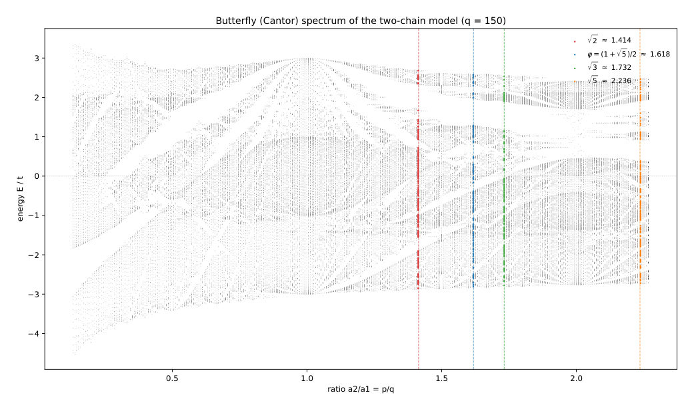
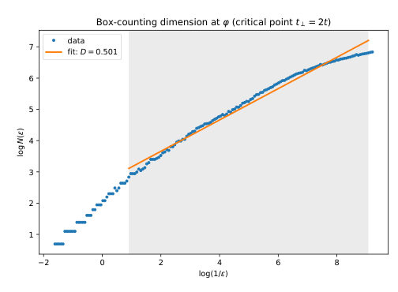
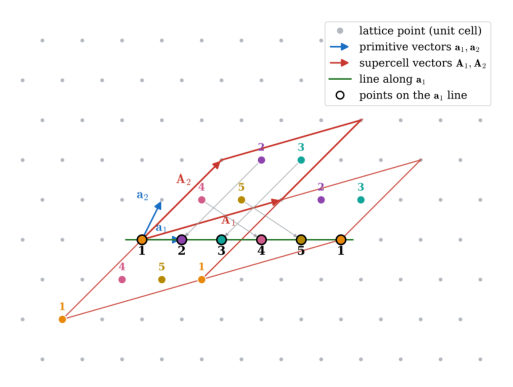
Summary. This paper introduces a comprehensive, approximation-free theoretical framework for analyzing moiré superlattices, overcoming the limitations of models based solely on low-energy Dirac cones. By employing a novel combination of cyclic mapping, block-circulant diagonalization, and generalized perturbation theory, the authors can accurately model the full electronic spectrum. This work provides a universal tool for engineering band structures in diverse van der Waals heterostructures.
Why it may be interesting. The development of a universal, full-spectrum theoretical tool for moiré systems is highly relevant for understanding emergent correlated and topological states in van der Waals heterostructures, bridging low-energy physics with high-energy band structure.
Main problem. Conventional theoretical models for moiré superlattices are limited by low-energy approximations and truncated interlayer couplings, failing to describe high-energy or strained geometries.
Main result. The authors establish a unified, approximation-free analytical formalism that extends beyond the Dirac point to characterize flat bands and degeneracies across the full energy spectrum.
Method. The formalism uses a rigorous 2D-to-1D supercell cyclic mapping combined with exact block-circulant diagonalization and quasi-degenerate Löwdin perturbation theory.
Model / system. The system is a general moiré superlattice described by a block Hamiltonian, which is analyzed by mapping the lattice structure onto a 1D cyclic supercell geometry.
Key observables. Flat band characteristics, high-energy degeneracies, and the full energy spectrum of the system.
Important parameters / regimes. The analysis is sensitive to the degree of strain, the inclusion of high-order interlayer coupling shells, and the energy point around which perturbation theory is centered.
Assumptions / limitations. The primary assumption is that the Hamiltonian can be mapped onto a block-circulant structure due to the cyclic reordering of unit cells.
Figures summary. Figures illustrate the Moiré superlattice structure, the general block matrix Hamiltonian, and the resulting band structures for 1D chain models.
Paper structure. The paper develops a comprehensive theoretical framework by first identifying the limitations of existing models, then introducing the three pillars of the new formalism (mapping, diagonalization, perturbation theory), and finally demonstrating its applicability across various physical regimes.
Conventional theoretical descriptions of moiré superlattices, epitomized by the Bistritzer--MacDonald continuum model, are fundamentally constrained by low-energy Dirac cone approximations and first-shell interlayer coupling truncations. While successful for small-angle twisted bilayer graphene near charge neutrality, these frameworks fail to provide universal analytical solutions for strained lattices, high-energy band behaviors, or arbitrary commensurate geometries. Here, we establish a unified, approximation-free analytical formalism for generalized moiré systems based on three pillars: (i) a rigorous two-dimensional-to-one-dimensional supercell cyclic mapping, (ii) exact block-circulant diagonalization of intralayer Hamiltonians, and (iii) quasi-degenerate Löwdin perturbation theory centered on arbitrary energy degeneracy points across the full spectrum. Unlike traditional schemes anchored to the Dirac point, our approach enables systematic perturbative expansions around any band crossing, unifying the characterization of low-energy flat bands with high-energy degeneracies. We demonstrate that this framework perfectly recovers the Bistritzer--MacDonald model in the low-energy limit while extending its reach to heterostrained systems and high-energy regimes. By incorporating high-order interlayer coupling shells, we reveal an intrinsic scale self-similarity in moiré lattices and predict the emergence of higher-order magic angles and tunable flat bands driven by secondary degeneracies. This work eliminates the long-standing lack of universal analytical tools for diverse moiré platforms, providing a full-spectrum theoretical foundation for band engineering and the exploration of exotic correlated and topological states in van der Waals heterostructures.
Authors: Zhongyu Wan, Guo-Hua Zhong, Cheng-wei Ju, Ruiqin Zhang, Hai-Qing Lin
Type: theory · Category: strongly correlated electrons · PDF: https://arxiv.org/pdf/2610.18171v1
Analysis basis: full PDF text, analyzed in chunks
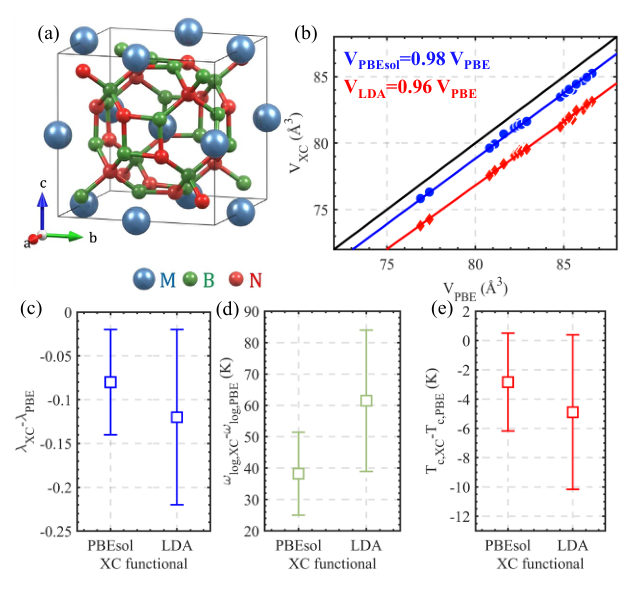
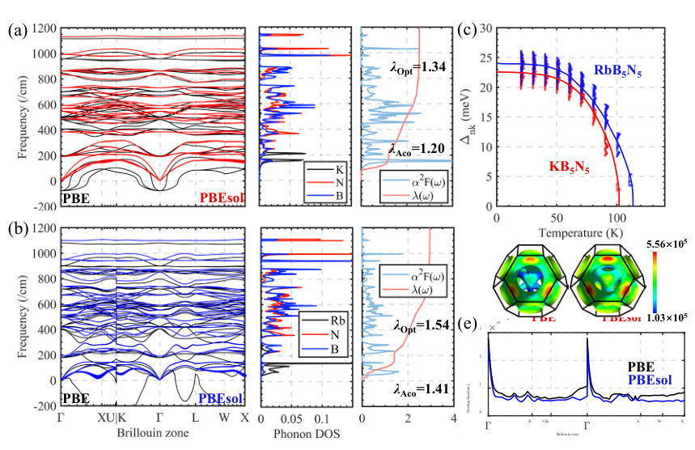

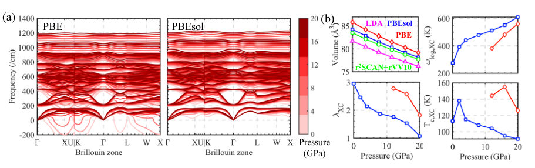
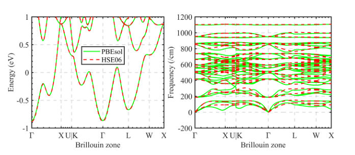
Summary. This work investigates the computational challenges in predicting high-temperature superconductivity in $ ext{M}( ext{BN})_5$ superconductors by comparing results from different DFT exchange-correlation functionals. The authors demonstrate that the PBEsol functional provides significantly more accurate predictions than PBE, stabilizing the lattice and yielding high $T_c$ estimates. This underscores that methodological choices in DFT are critical for reliable condensed matter predictions.
Why it may be interesting. While focused on solid-state superconductivity, the rigorous comparison of computational approximations (functionals) to predict emergent quantum phenomena like high-$T_c$ superconductivity is relevant to understanding the limitations of many-body theoretical models.
Main problem. Accurately predicting superconducting properties in high-temperature superconductors, particularly in covalent-cage materials, is highly sensitive to the choice of exchange-correlation (XC) functional in DFT calculations.
Main result. The PBEsol functional significantly outperforms PBE by correctly predicting lattice parameters and eliminating imaginary phonon frequencies, leading to a high superconducting critical temperature ($T_c$) estimate of 113 K at ambient pressure for $ ext{Rb}( ext{BN})_5$.
Method. The study uses high-throughput first-principles calculations, comparing the results derived from different XC functionals (LDA, PBE, PBEsol) to analyze electron-phonon coupling (EPC) properties.
Model / system. The research focuses on the covalent-cage $ ext{M}( ext{BN})_5$ family of superconductors, benchmarking against other systems like $ ext{CaB}_3 ext{C}_3$. The core physics involves phonon-mediated superconductivity and the stability of covalent bonds.
Key observables. Superconducting critical temperature ($T_c$), electron-phonon coupling ($\lambda$), phonon frequencies ($\omega_{ ext{log}}$), and lattice volumes.
Important parameters / regimes. Ambient pressure and 2 GPa; the choice between PBE and PBEsol functionals.
Assumptions / limitations. The study assumes that the primary source of computational uncertainty lies in the XC functional choice, not the pseudopotential choice, and uses standard DFT approximations due to computational constraints.
Figures summary. Figures compare crystal structures, lattice volumes calculated using different functionals (PBE vs. PBEsol), and deviations in EPC parameters ($\lambda$ and $\omega_{ ext{log}}$) across these functionals.
Paper structure. The paper systematically compares the predictions of different XC functionals on the structural and electronic properties of $ ext{M}( ext{BN})_5$. It highlights the failure modes of PBE (e.g., phonon softening, instability) versus the stabilizing and accurate results provided by PBEsol.
The recent experimental synthesis of covalent cage superconductors has ignited hopes for ambient-pressure high-temperature superconductivity, while the computational strategy for discovering new materials poses challenges for accurately estimating superconducting properties. Here, we quantified the response of electron-phonon coupling (EPC) properties in M(BN)5 superconductors to different exchange-correlation (XC) effects using high-throughput first-principles calculations. We found that the metallic covalent bonds responsible for superconductivity exhibit anomalously high sensitivity to functional selection uncertainty, distinguishing them from conventional superconductors mediated by metallic bonding. The widely used PBE functional systematically overestimates lattice volumes, inducing phonon softening, enhanced EPC, and consequent Peierls instability. In contrast, PBEsol, which is more accurate through enhanced treatment of short-range interactions, eliminates imaginary frequencies in Rb(BN)5 that appear at the PBE level, yielding an outstanding superconducting critical temperature (Tc) of 113 K at ambient pressure and 138 K at 2 GPa. Enhanced electron localization and short-range correlation in covalent bonds manifest through dual mechanisms: phonon hardening at the lattice scale and band widening at the electronic scale, which collectively suppress Peierls distortion and delocalize antibonding states. Pressure-dependent analysis reveals that compression attenuates phonon discrepancies between XC functionals, whereas electronic properties remain notably sensitive to XC-induced perturbations of fine electronic bands near the Fermi level.
Authors: Andrii Iurov, V. P. Gusynin
Type: theory · Category: other · PDF: https://arxiv.org/pdf/2610.17492v1
Analysis basis: full PDF text, analyzed in chunks
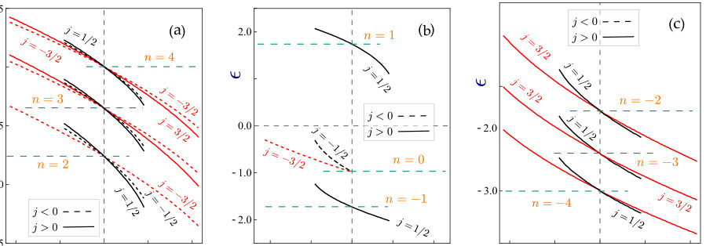
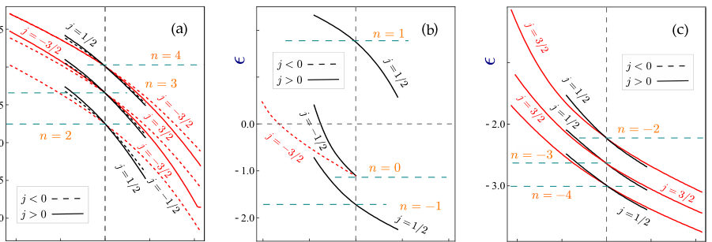
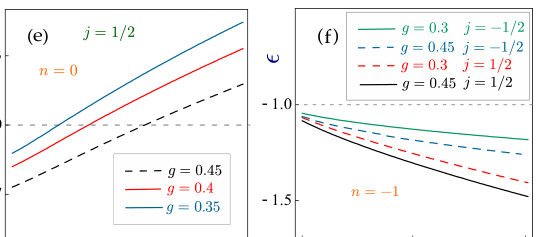
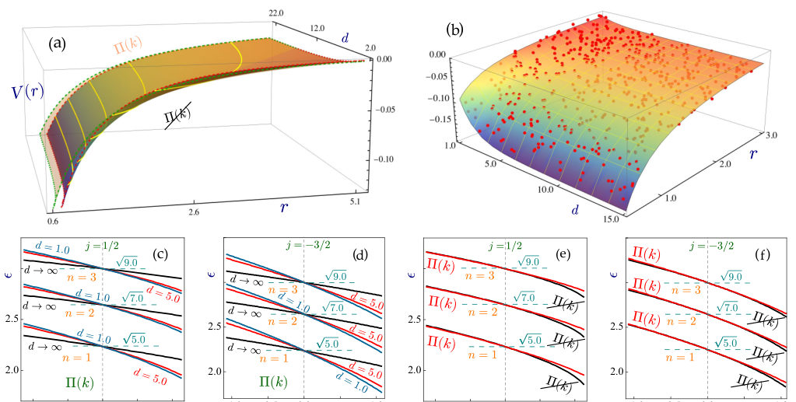

Summary. This paper provides a comprehensive theoretical analysis of how charged impurities modify the Landau levels in gapped graphene under a magnetic field. It utilizes the WKB approximation to derive the energy spectrum, paying special attention to the screening effects introduced by nearby metallic gates. The results highlight that these gate-induced screening effects significantly alter the energy levels, especially at small sample-to-gate distances.
Why it may be interesting. The detailed treatment of screening effects from nearby metallic gates provides a crucial, experimentally relevant refinement to standard theoretical models of impurity states in 2D Dirac materials.
Main problem. The paper theoretically investigates the electronic energy levels within gapped graphene when subjected simultaneously to a charged impurity potential and a perpendicular magnetic field.
Main result. The energy spectrum exhibits a significant dependence on the screening distance between the sample and metallic gates, particularly for small distances (less than 50 nm).
Method. The Wentzel-Kramers-Brillouin (WKB) approximation is employed to solve the Dirac equation, leading to a generalized Bohr-Sommerfeld quantization condition that incorporates a geometric phase.
Model / system. The system is gapped graphene modeled by a low-energy Dirac Hamiltonian, incorporating a screened Coulomb potential derived from polarization effects and nearby metallic gates.
Key observables. Energy spectrum (Landau levels) as a function of magnetic field strength and impurity charge.
Important parameters / regimes. Gap parameter (e.g., 53 meV), magnetic field strength (B), impurity charge (Z), and sample-to-gate distance (d).
Assumptions / limitations. The WKB method is used due to the lack of exact analytical solutions, and the potential is modeled by a screened Coulomb potential.
Figures summary. Figures illustrate the dependence of distorted energy levels on impurity charge and explicitly show the dependence of these levels on the screening distance (d).
Paper structure. The study progresses by first establishing the WKB method for general potentials, then focusing on the screened Coulomb potential model, followed by numerical results, and concluding with the physical implications.
In this paper, we present a comprehensive theoretical study of the electronic states in gapped graphene in the presence of a charge impurity and a magnetic field. We focus on the impurity-induced modification of the Landau levels under the influence of an attractive or repulsive Coulomb potential. Since analytical solutions of the Dirac equation are not available in this case, the study is carried out using the Wentzel-Kramers-Brillouin (WKB) approach. Special attention is paid to the screening of the Coulomb potential in the presence of metallic gates situated at some distances from graphene sheet, as is commonly the case in experiments. Using both analytical and numerical methods, we determine the energy spectrum as a function of the magnetic field strength and impurity charge for screened and unscreened Coulomb potentials. Our results reveal a significant dependence of the energy levels for sample-to-gate distances of less than 50 nm.
Authors: Guy Ohad, Nadine C. Bradbury, Joseph E. Subotnik
Type: theory · Category: other · PDF: https://arxiv.org/pdf/2610.18631v1
Analysis basis: full PDF text, analyzed in chunks
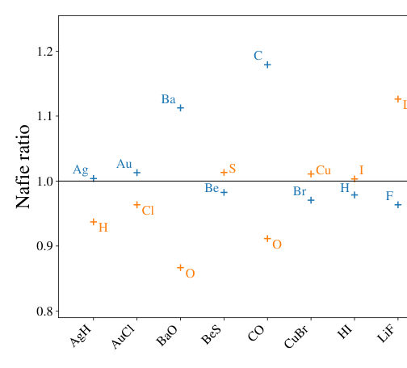
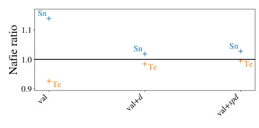
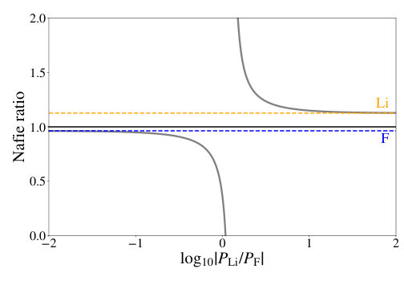

Summary. This paper develops a phase space electronic structure theory to accurately model molecular dynamics beyond the Born-Oppenheimer approximation, specifically addressing the challenges posed by pseudopotentials. By introducing a non-local coupling operator, the authors ensure the conservation of linear and angular momentum. The method is validated by showing excellent agreement with generalized forms of Nafie's equality across numerous diatomic molecules.
Why it may be interesting. This work is highly relevant to AMO physics and quantum dynamics as it provides a rigorous theoretical framework for treating non-adiabatic effects (nuclear motion) in molecular systems while maintaining fundamental symmetries like momentum conservation, which is critical for accurate time-dependent simulations.
Main problem. The paper addresses the challenge of developing a phase space electronic Hamiltonian that correctly conserves linear and angular momentum when performing ab initio calculations using pseudopotentials.
Main result. The proposed phase space theory, which incorporates a non-local operator, successfully maintains momentum conservation and shows excellent agreement with generalized forms of Nafie's equality across a test set of diatomic molecules.
Method. The authors construct a phase space Hamiltonian $\hat{H}_{PS}(\mathbf{R}, \mathbf{P})$ by modifying the standard Born-Oppenheimer framework to include nuclear momentum $\mathbf{P}$, specifically by introducing a non-local operator $\hat{\Gamma}_{nl}$ to handle pseudopotentials.
Model / system. The theory is applied to electronic structure calculations for diatomic molecules, extending beyond the Born-Oppenheimer approximation to account for nuclear motion and the complexities introduced by pseudopotentials.
Key observables. Electronic momentum, total linear and angular momentum conservation, and the Nafie ratio (a diagnostic tool checking consistency with Nafie's equality).
Important parameters / regimes. The non-local coupling operator $\hat{\Gamma}_{nl}$ is crucial; the analysis tests the dependence on the ratio of nuclear momenta $| ext{PLi}/ ext{PF}|$.
Assumptions / limitations. The primary approximation is the construction of the phase space Hamiltonian $\hat{H}_{PS}$ using an operator $\hat{\Gamma}_I$ that satisfies required symmetry constraints, which is necessary to enforce momentum conservation.
Figures summary. Figure 1 shows the Nafie ratio for 17 diatomic molecules, comparing results with and without the non-local term. Figure 3 plots the Nafie ratio for LiF as a function of the ratio of nuclear momenta, showing divergence near unity.
Paper structure. The paper first establishes the need for a phase space Hamiltonian to go beyond the Born-Oppenheimer approximation. It then details the construction of $\hat{H}_{PS}$ using $\hat{\Gamma}_{nl}$ to ensure momentum conservation. Finally, it validates this theory by benchmarking it against a generalized Nafie-like equality using multiple diatomic molecules.
We demonstrate how to build a robust phase space electronic Hamiltonian $\hat{H}_\text{PS}(\boldsymbol{R},\boldsymbol{P})$ that depends on nuclear position $\boldsymbol{R}$ and nuclear momentum $\boldsymbol{P}$ in the presence of ionic pseudopotentials. In particular, we show that in order to account for the non-local component of a pseudopotential while also conserving linear and angular momentum, one is forced to introduce a non-local one-electron operator $\hat{\boldsymbolΓ}^\text{nl}$ that couples electronic and nuclear momenta together. To test the validity of our ansatz, we derive a generalized form of Nafie's exact equality (which relates electronic momentum and electronic position) so as to include the presence of pseudopotentials. We then benchmark our proposed phase space electronic structure theory against this generalized Nafie-like result for a diverse set of diatomic molecules spanning a wide range of elements. We find excellent agreement across this ab initio test set, highlighting the strength of our method in capturing meaningful electronic momentum beyond the Born-Oppenheimer framework.
Authors: Ipsita Mandal
Type: theory · Category: other · PDF: https://arxiv.org/pdf/2610.18629v1
Analysis basis: full PDF text, analyzed in chunks
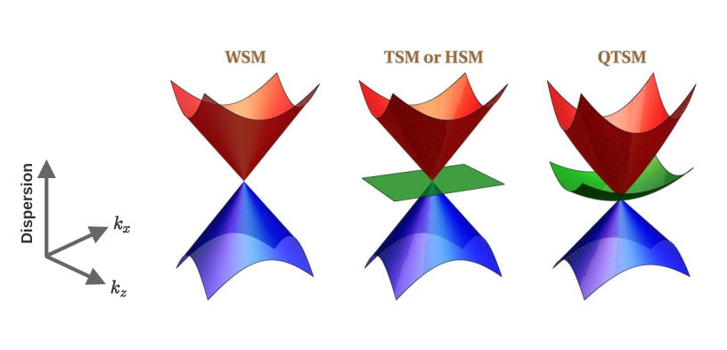
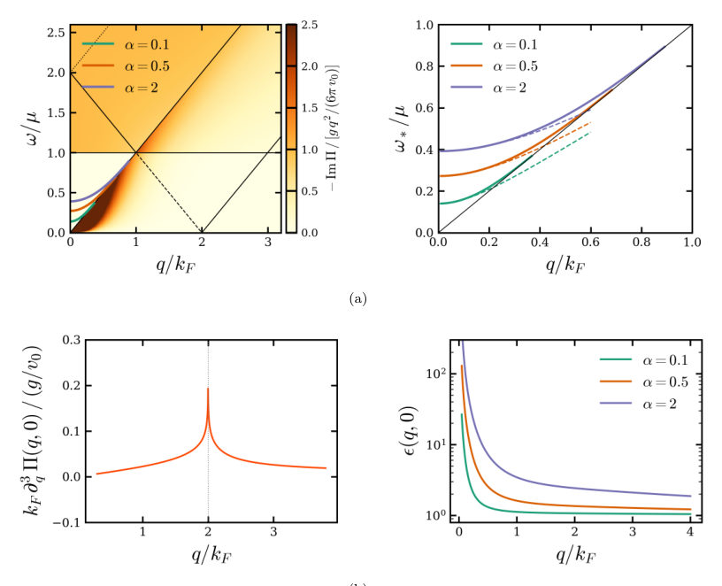

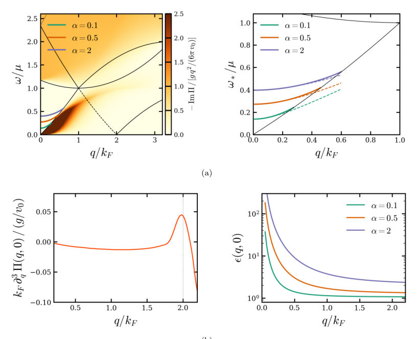

Summary. This paper theoretically analyzes plasmon modes in topologically rich semimetals, such as triple-point and Hopf semimetals. Using the Random-Phase Approximation, the authors compare systems with different band structures, showing that quantum geometry dictates the screening response. The work is significant for understanding charge dynamics in advanced condensed matter materials.
Why it may be interesting. The detailed analysis of collective excitations and screening in topological materials provides insights into how band structure and topology jointly govern macroscopic electromagnetic responses, which is relevant for designing novel quantum devices.
Main problem. The study investigates collective charge excitations, specifically plasmon modes, in various topological semimetallic systems.
Main result. The analysis distinguishes how the quantum geometry of the eigenstates (e.g., Hopf vs. Weyl) influences interband screening and plasmon dispersion, especially when comparing linear vs. quadratically corrected models.
Method. The Random-Phase Approximation (RPA) is employed to calculate the density response function and the dielectric function, analyzing both long-wavelength and arbitrary momentum regimes.
Model / system. The systems studied include triple-point semimetals (TSM), their quadratically corrected versions (QTSM), Weyl semimetals (WSM), and Hopf semimetals (HSM). The formalism uses a density-response approach based on Bloch band structure.
Key observables. Plasmon dispersion and damping, Drude weights, screening function, Friedel oscillations, and the particle-hole continua.
Important parameters / regimes. Momentum transfer ($q$), frequency ($\omega$), Fermi momentum ($k_F$), and the quadratic correction parameter ($c$).
Assumptions / limitations. The calculations rely on the Random-Phase Approximation (RPA) and involve analyzing different momentum transfer limits ($q \ll k_F$ vs. arbitrary $q$).
Figures summary. Figure 1 schematically compares the band dispersions for WSM, TSM/HSM, and QTSM, highlighting the effect of quadratic correction on the flat-band.
Paper structure. The paper progresses by establishing the theoretical framework (RPA, density response), analyzing the effect of quadratic corrections on the band structure, and then comparing the resulting plasmon dynamics across different topological semimetals in various momentum regimes.
We study collective charge excitations in pseudospin-1 triple-point semimetals within the random-phase approximation, considering both the linearised model with a flat-band and its quadratic-corrected counterpart. We analyse their density response, Drude weights, screening, plasmon dispersion and damping, particle-hole continua, and Friedel oscillations from the long-wavelength to the arbitrary-momentum regime. The quadratic correction renders the flat-band dispersive and endows it with a Fermi surface, thereby affecting the overall response. Comparisons with Weyl and Hopf semimetals reveal how bandstructure and quantum geometry jointly govern collective charge dynamics. While the Drude weights are determined by the Fermi surface and band-velocities, interband screening, plasmon dispersion, and Friedel oscillations reflect the quantum geometry of the eigenstates.
Authors: Zhongyu Wan
Type: theory · Category: other · PDF: https://arxiv.org/pdf/2610.18185v1
Analysis basis: full PDF text, analyzed in chunks
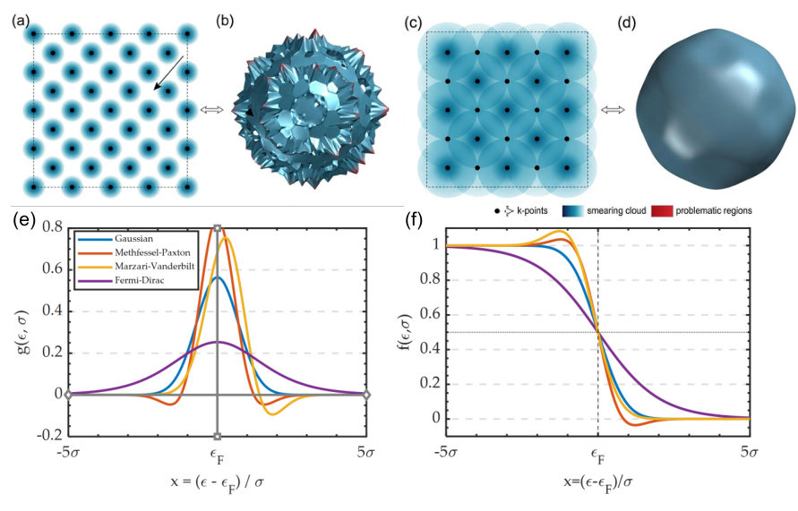
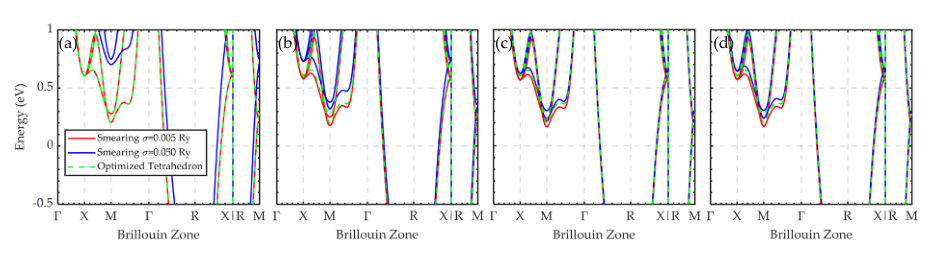


Summary. This work investigates how arbitrary smearing parameters in electronic structure calculations corrupt predictions of superconductivity in materials like CsH6. By comparing various smearing methods to a benchmark, the authors demonstrate that these numerical artifacts can incorrectly predict material instability or alter the superconducting transition temperature. They propose a physically motivated scaling relation to provide an objective standard for computational parameter selection.
Why it may be interesting. While focused on solid-state physics, the rigorous development of an objective, parameter-free protocol for computational input parameters (like smearing width) is highly relevant to any field relying on complex numerical simulations, including quantum many-body systems.
Main problem. The paper addresses the quantitative impact of empirical smearing parameters used in first-principles calculations on the prediction of phonon-mediated superconductivity.
Main result. The choice of smearing function and width significantly alters calculated properties, but a derived scaling relation offers an objective protocol to minimize subjective errors in high-throughput screening.
Method. The authors systematically compare results from various smearing methods (Gaussian, MP, FD) against the parameter-free optimized tetrahedron method using Density Functional Theory (DFT) calculations.
Model / system. The study uses hexahydride CsH6 as a benchmark system to investigate the electronic structure, lattice dynamics, and electron-phonon coupling (EPC) in conventional superconductors.
Key observables. Superconducting transition temperature (Tc), electron-phonon coupling constant (lambda), phonon frequencies, and the Fermi level position relative to the Density of States (DOS).
Important parameters / regimes. Smearing width (sigma), smearing function type (e.g., Methfessel-Paxton, Fermi-Dirac), and the maximum energy spacing between k-points.
Assumptions / limitations. The primary assumption is that the systematic errors introduced by smearing parameters obscure the true physical superconducting mechanism, which is modeled using linear-response theory.
Figures summary. Figures illustrate schematic effects of smearing (undersampling/over-smoothing), band structure shifts, DOS evolution vs. sigma, and the dependence of Tc and lambda on the smearing width.
Paper structure. The paper first establishes the problem of subjective smearing parameters, analyzes the consequences of long-tailed vs. short-tailed smearing on electronic structure and lattice stability, benchmarks against the optimized tetrahedron method, and concludes by deriving a free-electron-gas-based scaling relation for objective parameter selection.
In first-principles calculations of metallic systems, the discrete electronic mesh in the Brillouin zone necessitates a smearing function and its width (e.g., the widely used 0.02 Ry Methfessel-Paxton scheme) to enforce continuity of energy and occupation at the Fermi surface. However, the quantitative impact of such empirical parameters on phonon-mediated superconductivity has long been overlooked, leading to their habitual selection by mere convention. Here, using hexahydride CsH6 as a benchmark, we systematically investigate the magnitude and propagation mechanism of smearing-induced errors against the parameter-free optimized tetrahedron method. Long-tailed smearing delocalizes the occupation window, causing substantial Fermi-level shifts, flattening of the density of states, and hardening phonon modes, thereby weakening electron-phonon coupling. Conversely, short-tailed smearing suffers from insufficient sampling, producing density-of-states oscillations and enhanced Fermi-surface nesting; via amplified electronic screening and Peierls instabilities, this softens acoustic modes and generates imaginary frequencies, causing CsH6 to be dynamically unstable and discarded. However, the optimized tetrahedron method reveals that CsH6 is dynamically stable under ambient pressure with a remarkable superconducting transition temperature of 121 K. To prevent subjective empirical parameters from obscuring theoretically promising high-temperature superconductors, we derive a simple scaling relation for the smearing width, applicable to different smearing functions, from the free-electron-gas model, offering an objective, precise, and efficient protocol for parameter selection in high-throughput screening.